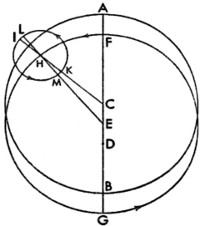
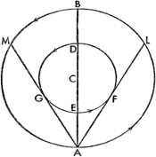

Şu ana kadar Güneş'in etrafında Dünya'nın; Dünya'nın etrafında Ay'ın devinimlerini elimizden gelen en iyi şekilde açıkladık. Artık burada beş gezici yıldızın hareketine değineceğiz: İlk kitaptaki, yörünge dairelerine ait merkezlerin, Dünya'nın değil de Güneş'in etrafında olduğunu gösterirken, genel özetimizde de söylediğimiz gibi, Dünya'nın hareketliliği, bu gezegenlerin sırasını ve büyüklüğünü şaşılası bir uyum ve kesin şaşmazlıkla birbiriyle ilişkili kılmaktadır. Buna uygun olarak bize düşen, bütün bunları tek tek ve daha duru bir şekilde göstermektir; hareketlerin oranının daha büyük bir kesinlikle onaylanabilmesi için, elimizden geldiğince doğru bir şekilde, özellikle de eskilerden ve çağdaşlarımızdan edindiğimiz tecrübelere dayanarak görünümleri hesaplayıp sözümüzü yerine getireceğiz. Platon'un Timaeus'unda şu beş yıldızdan her biri görünen biçimine göre adlandırılmıştır[155]: Satürn, Phaenon, bunun için parlayan[156] ya da beliren[157] de diyebilirsiniz; zira Satürn diğerlerinden daha az karanlıkta kalır ve karanlığa gömüldükten sonra, Güneş sayesinde, diğerlerinden daha çabuk belirir. Jüpiter, Phaeton'un adı haşmetinden; Mars, Pyrois'in adı kızıl parlaklığından gelir. Venüs bazen ʈÛÊÔÚÔ˜ ya da ÂÛÂÚÔ˜ yani, sabah ya da akşam parıldadığından, Lucifer[158] veya Vesperugo[159] olarak anılır. Sonuncu Merkür, Stilbon'un adı da titremesinden, titrek ışığından gelir. Ayrıca gezegenler için boylamda ve enlemde Ay'a nazaran daha büyük düzensizlikler söz konusudur.
1. Gezegenlerin Devinimleri ve Ortalama Hareketleri Üzerine

Gezegenlerde tümüyle farklı şekilde beliren iki boylamsal hareket vardır. Biri, söylediğimiz gibi, Dünya'nın hareketine bağlıdır, diğeri ise tek tek gezegenlere özgüdür. İlkine doğru bir şekilde paralaks hareketi denilebilir; bu hareket gezegenlerin duruyor, ileri ve geri gidiyor gibi görünmelerini mümkün kıldığından; her daim ilerleyen gezegen bu şekilde kendi hareketiyle farklı yöne sapmaz, aksine yörünge dairelerinin farklılıkları ve büyüklüklerine göre Dünya'nın hareketinin neden olduğu paralaks yüzünden böyle görünür. Buna göre Satürn'ün, Jüpiter'in ve Mars'ın hakiki konumunun, bu gezegenler àcron‡ctaı[160] olduklarında bize göründüğü ve geri dönüşlerinin yaklaşık olarak ortasında belirdiği açıktır. Zira bu zamanda, Güneş'in ortalama konumuna göre düz bir çizgide iner ve paralakslarından sıyrılırlar. Ayrıca Venüs ve Merkür'le ilgili başka bir oran söz konusudur: Bu gezegenler Güneş'le kavuşumda karanlığa bürünür; Güneş'ten uzakta, diğer yanda kaldıklarında sadece uzanımlarını gösterir ve asla paralakssız bulunmazlar. O halde gezegene göre Dünya'nın hareketini kastettiğim paralaks devinimi, her gezegen için özeldir; gezegen ve Dünya karşılıklı olarak birbirini ortaya koyar. Paralaks hareketiyle ilgili şunun dışında bir şey söyleyemeyiz: Dünya'nın düzenli hareketi, Satürn, Jüpiter ve Mars'ta olduğu gibi gezegenlerin hareketini aşar ya da Venüs'te ve Merkür'de olduğu gibi, gezegen hareketleri Dünya'nın düzenli hareketini aşar. Aksine bu paralaks hareketlerinin açık bir farkla eşit olmadığı görüldüğünden, eskiler bu gezegenlerin hareketlerinin oldukça düzensiz olduğunu ve düzensizliğin nüksettiği dairelerin apsitlerini içerdiğini düşünmüşler; dahası bu apsitlerin sabit yıldızlar küresinde daimi mevkilerinin olduğunu sanmışlardı. Bu veri sayesinde gezegenlerin ortalama hareketlerini ve eşit periyotlarını öğrenme yolu da açılmış oluyordu. Eskiler, bir gezegenin konumunu Güneş'ten ya da sabit yıldızdan tam mesafesine göre kayda geçirdiğinde ve Güneş'ten eşit mesafesiyle aynı konuma kadarki zaman aralığını bulduğunda; gezegenin tüm düzensiz hareketini tamamladığı ve Dünya'yla önceki durumuna geri döndüğü görülmüş oluyordu. Böylece geçen süre sayesinde tam, eşit devinimleri ve bu devinimlerden de gezegenin özel hareketlerini hesaplayabiliyorlardı. Ptolemaeus birkaç yıllık devri incelemişti; kabul ettiğine göre bilgileri Hipparchus'tan almıştı. O, Güneş yıllarının, ekinokstan ya da gündönümünden ölçülen yıllar olarak anlaşılabileceğini düşünüyordu. Fakat bu yılların tümüyle eşit olmadığı da ortaya konmuştu; bu yüzden biz sabit yıldızlardan ölçülen yılları kullanacağız ve onlar sayesinde bu beş gezegenin hareketleri, tarafımızdan oldukça kesin bir şekilde bir araya getirilmiş olacak; zamanımızda ise onlarda, aşağıda görüldüğü gibi, bazı eksiklikler ya da fazlalıklar bulduk. Buna göre Dünya'nın Satürn'e göre, Güneş yıllarımızdaki karşılığı 59 yıl 1 gün 6 dakika 48 saniye olan, paralaks hareketi dediğimiz 57 devinimi söz konusudur: gezegen bu zaman diliminde kendi hareketiyle iki çevrim artı 1º6'6''yi tamamlar. Jüpiter, Dünya tarafından 71 Güneş yılı 5 gün 45 dakika 27 saniyede 65 defa geçilir: gezegen bu zaman diliminde kendi hareketiyle 6 dönüş eksi 5º41'2,5'' yapar. Mars'ın 79 Güneş yılı 2 gün 27 dakika 3 saniyede 37 paralaks devinimi vardır. Gezegen bu zaman diliminde kendi hareketiyle 42 devir artı 2º24'56''yi tamamlar. Venüs Dünya'nın hareketini, 8 Güneş yılı eksi 2 gün 26 dakika 46 saniyede 5 defa aşar. Bu zaman diliminde, Güneş'in etrafında 13 devinim eksi 2º24'40''yi tamamlar. Son olarak Merkür, paralaksın 145 devresini tamamlar; böylece Dünya'nın hareketini, 46 Güneş yılı artı 34 dakika 23 saniye geçer. Ve bu zaman diliminde Güneş'in etrafında 191 devinim ve yaklaşık artı 34 dakika 23 saniye vardır. Tek tek gezegenler için tekli paralaks devirleri şöyledir: Satürn için 378 gün 5 dakika 32 saniye 11 salise; Jüpiter için 398 gün 23 dakika 25 saniye 56 salise; Mars için 779 gün 56 dakika 19 saniye 7 salise; Venüs için 583 gün 45 dakika 17 saniye 24 salise; Merkür için 115 gün 52 dakika 42 saniye 12 salise. Bu devirleri dairenin derecelerine uyarlayıp günlerin sayısına ve dakikalara göre 365'lik oranla çarptığımızda, paralaksın yıllık hareketini elde etmiş oluruz. Satürn için 347º32'2''54'''12''''; Jüpiter için 329º25'8''15'''6''''; Mars için 168º28'29''13'''12''''; Venüs için 225º1'48''54'''30''''; Merkür için 3º6'24''13'''40''''. Bunların 365'te biri günlük hareketi verir: Satürn için 57'7''44'''5''''; Jüpiter için 54'9''3'''49''''; Mars için 27'41''40'''22''''; Venüs için 36'59''28'''35''''; Merkür için 3º6'24''13'''40''''. Buna uygun olarak aşağıdaki tablolarda, Güneş ile Ay'ın ortalama hareketinde olduğu gibi, ortaya konuyorlar. Fakat bu yolla gezegenlerin her birine özgü hareketleri belirtmeyi gereksiz görüyoruz. Zira gezegenlere özgü hareket ve paralaksın ortalama hareketi, Güneş'in ortalama hareketini oluşturduğundan; gezegenlere özgü bu hareketler, paralaks hareketlerinin Güneş'in ortalama hareketinden çıkarılmasıyla saptanır. Sabit yıldızlar küresine bağlı olarak yıllık hareketler, yukarıdaki gezegenlere göre aşağıdaki gibidir: Satürn için 12º12'45''57'''24''''; Jüpiter için 30º19'40''51'''58''''; Mars için 191º16'18''30'''36''''. Fakat kendilerine özgü hareketlerini görmediğimizden, Venüs ve Merkür'ün yerine Güneş'in hareketini kullanırız; bu hareket, aşağıdaki tablolarda gezegenlerin hareketlerini inceleme ve kanıtlama yolunu gösterir.
